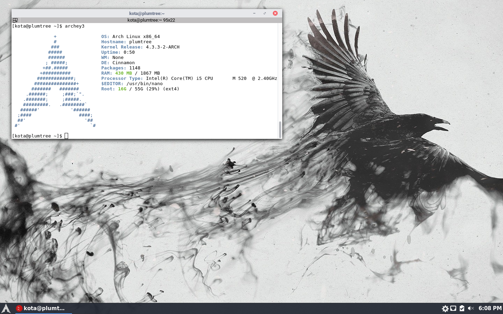

I recently made the switch, at the beginning of this year I decided to start using Linux on at least one of my daily computers. I went with my laptop because I wouldn’t be trying to game on it and I really wanted the extra speed that comes with a light weight install. After the first few days I knew there wasn’t even a chance I’d ever go back to windows on my laptop. Things actually work well and make sense. I don’t really feel like I’m jumping through loops just to do relatively simple things on my laptop like I did when I was using windows and I feel like I’m actually in control and can do what I want with my computer rather than using strange workarounds to have a little control in windows.
I’m not exactly a beginner and went with arch for my laptop with cinnamon as my DE. I went with cinnamon mostly because other people might use my laptop from time to time and I didn’t want them to be confused by gnome or worse I3 and arch because it’s fun and I don’t have enough packages for things to get unstable or break. I’m using the arc gtk theme and numix circle icons (I know everyone uses numix, but damn there’s a reason.)
If you’re new and want to get a taste of a Linux OS I’d recommend trying Mint Linux or Xubuntu. Both are made to be easy and will look and feel relatively familiar to you if you’re used to windows. If you’re coming from Apple and want to try something that will feel similar maybe check out Elementary, I haven’t used it myself but lots of people love it and it’s a pretty solid experience for beginners. If you or whoever you’re installing Linux for doesn’t have very much previous experience and they have a computer that’s relatively new then maybe even go with the most popular desktop distro Ubuntu because it is extremely easy and has tons of helpful support.
Linux, contrary to popular belief, isn’t exactly only for computer experts. As a matter of fact the people who seem to love it the most immediately are people who have very little experience and people who have a very large amount of experience. Most of the beginner Linux distros are extremely intuitive and easy for kids and the elderly to learn very quickly. Windows 10 on the other hand isn’t actually that intuitive at all and most new users are a little confused by the fact that there are essentially two UI’s the fullscreen thing that came with windows 8 and the old desktop environment that everyone understands. Not only that, but if you want to change a setting you have to figure out if it’s in the control panel, the new PC settings menu, or if you simply can’t do it at all. For example I wanted to make my windows only update when I tell it to rather than it just deciding it wants to spend twenty minutes updating when I’m turning it on to print something out before school in the morning. This wasn’t a simple setting though. Instead I had to edit a registry key and even after all that I still had a problem with it. It would randomly give me a full-screen notification telling me to update. You could just ignore it and not update, but it was pretty annoying when it alt-tabbed me out of competitive game to tell me to update.
Another thing that
makes Linux easier to use than windows is the fact that they have
repositories for just about every program you could want.
Repositories are kinda like the app store on your phone. As a matter
of fact the app stores on your phone is basically just package
repositories with a user interface. Many of the popular distros come
with a simple program like the Ubuntu software center that you can
open and install programs from. Or if you want to try the package
manger in a terminal window you just have to run a simple command
like sudo pacman -S firefox
That’s the command to install Firefox in Arch Linux.
It’s really that easy. The best part is these
repositories are monitored so that none of the programs have viruses
or things that will spy on you and mess up your computer. It’s a
lot safer than just going to random websites to download your
programs like windows. Also whenever you want to update your computer
you can have it update all of these programs rather than just your
operating system. No more opening up some program you downloaded from
some random website and being asked to do a bunch of strange things
to update it so you can finally use it. Just one click and everything
can be updated.
That’s why I switched. That and the fact that it’s free and open source so I can do whatever I want with my computer and even tweak it and give out my tweaks online. As of today every single computer in my house is using Linux and they are all running far faster and with far less problems. Some of them are running Xubuntu because of how fast and easy it is, some are running Arch because of how you can do anything you want with it and it’s fun to know exactly how everything works, and two other computers are running Debian because of how stable and amazing it is for running a web-server, a print server, or a file server.
- Kota